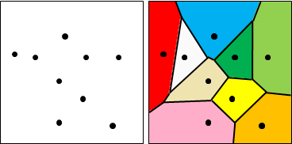
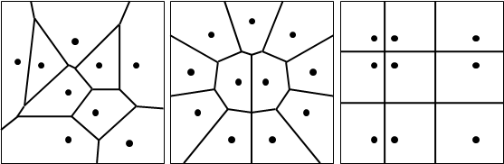
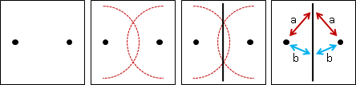
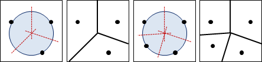
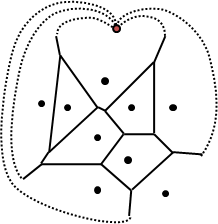
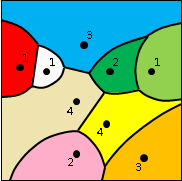
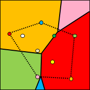

Voronoi Diagram
Voronoi Diagram
平面上散布許多點。平面上每一處，各自歸類於最近的點；自然而然的，形成了分界線，是中垂線。Voronoi Diagram是分界線組成的集合。Voronoi是發明者的姓氏。
換個角度看。鄰近的點的中垂線，形成Voronoi Diagram。
Voronoi Diagram隱含著鄰近的資訊，所以「最靠近」、「距離最短」之類的問題，多半可以透過Voronoi Diagram解決。
Voronoi Diagram是大自然的圖案，諸如長頸鹿的斑紋、蜻蜓的翅膀、葉片的細胞壁。應用相當廣泛。


UVa 12109
Perpendicular Bisector
「中垂線」，中學數學，不再贅述。
三角形的三中垂線，交於一點，是外接圓圓心，稱作外心。中垂線有等距、平分的感覺，圓有等距、歸心的感覺，兩者關係匪淺。
由此可知，Voronoi Diagram一個點至少連著三條邊。
Voronoi Diagram點和邊的數量
Voronoi Diagram看上去就像個平面圖。延伸至無限遠的邊，通通接往一個點，Voronoi Diagram就變成平面圖。
運用平面圖歐拉公式v-e+f=2，輔以「一個點至少連著三條邊」的限制，可以推理出Voronoi Diagram最多有2N-5個點、3N-6條邊，都是O(N)。
延伸閱讀：勢力消長
每個點設定不同的強度，兩點之間依照強度比例劃定界線。理論上可以生成所有平面圖？
延伸閱讀：歸類於第k近的點
平面上每一處，各自歸類於第k近的點，就形成了Order k Voronoi Diagram。至於這有什麼用途，我也不知道。
為了辨識每塊區域歸類於哪一點，我們將每個點標上不同顏色，讓區域的顏色對應點的顏色。
上方圖片以HTML5 Canvas繪製而成，演算法是窮舉法。有興趣的讀者請自行檢視網頁原始碼。
延伸閱讀：歸類於最遠的點
既有最近，亦有最遠。平面上每一處，各自歸類於最遠的點，就形成了Farthest Point Voronoi Diagram。
換個角度看。相離最遠的點，自然而然都在凸包上，證明請參考「Farthest Pair」。相離最遠的點的中垂線，形成Farthest Point Voronoi Diagram。
延伸閱讀：點改成其他東西
我們可以把一個點改成一個圓、一條線段、一群點、一個多邊形等等圖形，得到各式各樣的Voronoi Diagram。
這些都是進階課題，有興趣的讀者請自行尋找資料。